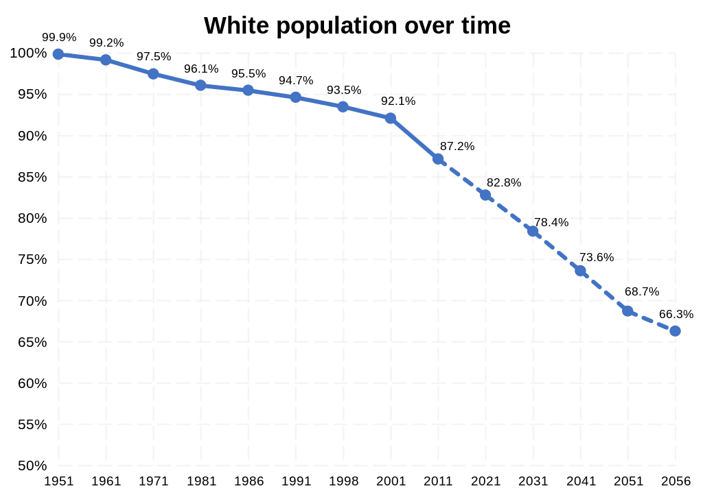

Race Realism and Philosophy of Race FAQs
Table of Contents
- 1. What is Race? What is Race Realism?
- 2. Definitions
- 3. JayMan’s Race Realism FAQs
- 4. Isn’t Race just a social construct?
- 5. Why does it matter that people come to terms with race realism?
- 6. Hasn’t Academia Debunked Race Realism As Anti-Scientific Pseudoscience?
- 7. Isn’t it the case that there is no objective way to quantify and define “intelligence” with IQ scores?
- 8. Aren’t most / all racial disparities better explained by environmental factors?
- 9. Aren’t there exceptionally smart people from all races?
- 10. Do Race Realists believe that some races are better than others?
- 11. Are all race realists racists, Nazis, and/or white supremacists?
- 12. If race realists don’t necessarily have to be racist, then why are so many of them racist?
- 13. What do race realists think about segregation?
- 14. What do race realists think about race-mixing?
- 15. What is an ethnostate?
- 16. Does race realism promote collectivism?
- 17. Isn’t The Great Replacement Of White People Just A Myth?
Note: I haven’t finished writing this file yet.
1. What is Race? What is Race Realism?
Race Realism: Race Realism is a subcategory of Biological Realism. Being a race realist means acknowledging that:
- Race is defined as “a statistical cluster of genetic variation characterized by phenotypic similarity”, and
- All the genes of the various races in the world occur at different statistical frequencies for each race due to all the different evolutionary and selectionary pressures that persisted in their ancestral environments for many thousands of years, and
- Race is often a categorization scheme for human beings based on phenotypic similarity.
That’s it. But you have to understand what a “statistical cluster” is, and what that means with regards to race and genetics, as well as understanding that racial differences are continuous, not discrete like the distinction between species. [Race Realism] ≠ [Racism].
2. Definitions
- Evolution
- The change in the heritable characteristics of biological populations over successive generations. Evolution is a three-step process consisting of: 1. Reproduction (to excess), 2. Variation (caused by mutations) in offspring, 3. Selection.
- Biological Realism
- The unbiased application of the implications of evolutionary reasoning onto human beings, regarding race, sex, selfishness, eugenics/dysgenics, and intrinsic violence.
- Race Realism
- See the previous section.
- Race
- A statistical cluster of genetic variation characterized by phenotypic similarity. Races are both social constructs and useful categories for describing biological realities.
- Statistical Cluster
- A grouping of a set of objects in such a way that objects in the same group (called a cluster) are more similar (in some sense) to each other than to those in other groups (clusters). For more info, see: Wikipedia: Cluster Analysis.
- Mixed-Race
- Having genes and ancestry from multiple different races. Note that being Mixed-Race cannot be well-defined unless two or more races are defined beforehand.
- Ethnicity / Ethnic Group
- A grouping of people who identify with each other on the basis of shared attributes that distinguish them from other groups. Those attributes can include common sets of traditions, ancestry, language, history, society, culture, nation, religion, or social treatment within their residing area.
- Eugenostate
- A state that enforces Eugenic Population Control, Laissez-Faire Eugenics, and Immigration restrictions, regardless of race or ethnicity.
- Ethnostate
- An ethnonationalist state that enforces racial or ethnic homogeneity. Ethnostates could theoretically enforce eugenics policies as well, but that would be harder to implement in an ethnostate for a number of reasons. Ethnostates also require more complicated immigration policies than eugenostates.
- Racism
- Irrational prejudice or discrimination based upon race or ethnicity.
- The West
- Countries that have majority European populations and/or have been influenced by Western Culture, including Europe, the Americas, Australia, and New Zealand. Sometimes I use this term more generally to also include Japan, South Korea, and Taiwan since those countries have also been influenced by Western culture, and have decent genetics for modernity, as far as our policy objectives are concerned.
- The Great Replacement (of White People)
- The phenomenon where white people are being replaced by foreign ethnicities within Western countries. It is very real and in several decades, it is projected to be finished by the end of the 21st century.
- White Preservationism
- A movement to combat the Great Replacement by increasing white fertility rates in the Western World. From a eugenics standpoint, the goal of white preservationism is to preserve (most of) the (good) genes of Europeans, not necessarily to preserve white people as a distinctive race. Zero Contradictions supports white preservationism.
- White Nationalism (v1)
- i
- White Nationalism (v2)
- i
- White Supremacy
- The racist belief that white people are superior to all other races. Zero Contradictions condemns white supremacy.
- Race Denialism
- The denial of Race Realism, either with fallacies and/or a refusal to extend the implications of evolutionary reasoning onto human beings.
- Race Creationism
- The same thing as Race Denialism, with the connotation that the belief is similar to religious dogma.
- Racial Solidarity (v1)
- Solidarity between all the members of a race with each other.
- Racial Solidarity (v2)
- Solidarity between people from different races with each other.
3. JayMan’s Race Realism FAQs
JayMan’s Race, Inheritance, and IQ FAQs: JayMan’s FAQs page focuses more on the scientific evidence for race realism, whereas this FAQs page that you’re currently reading focuses more on the misconceptions of Race Realism.
5. Why does it matter that people come to terms with race realism?
Because race realism is the best scientific explanation for differences in crime rates, academic achievement, and success between different races in the modern world. If we completely rule out the best explanation, we deny the influence of biology on human outcomes, and we make it evil to challenge the Left’s denial of biology, then the Left has free reign to come up with all sorts of insane, ridiculous, and racist anti-white conspiracy theories and explanations to account for the achievement gaps between races. These mistaken beliefs motivate the Left to pursue “solutions” to the achievement gaps that involve dismantling meritocracy and thwarting criminal justice at every opportunity with extreme zeal and steady progress. This is really bad if civilization is to have a decent future.
On the other hand, if people can be convinced that the racial outcome gaps are caused by genetic differences instead of environment factors, then people will stop believing in hidden forces and conspiracies. The result is that meritocracy and criminal justice will be preserved, instead of dismantled in the name of “racial equality”. If we want to preserve civilization, then we need millions of people to come to terms with biological realism. It’s the truth.
TL;DR: Accepting race realism eliminates the justification for many of the detrimental social policies in the West, from “anti-racism” to mass immigration.
5.1. To argue race is real is to argue genes are real, which is to argue for Gattaca.
Maybe that could be true if our society isn’t rational enough to fully understand the implications of biology. But to argue that race isn’t real is to argue for affirmative action and anti-white and anti-Asian racism in order to make up for the racial achievement gaps, and we don’t see how that’s any better. If it is indeed the case that different races are genetically predisposed to have different behaviors, then we ought to accept the reality.
Nothing normative follows from any proposition that simply states a statistical generality. Whether or not some people were genetically inclined to be more or less intelligent and whether or not those genes correlated strongly with race, no one would suddenly hate minorities, or vice versa. No one who believes “we ought to treat people the same regardless of race” is going to revise that on learning any of the things supported by race realists even if we assume it’s all true, and vice versa.
6. Hasn’t Academia Debunked Race Realism As Anti-Scientific Pseudoscience?
No, and this question assumes that Academia can be trusted, even though there are multiple reasons why Academia cannot be trusted:
- Ideological Bias
- Perverse Incentives
- Social Circularity
- Naive/Fake Empiricism
- Statistical Manipulation (e.g. p-Hacking)
For more information, the following sources go into more detail about why most modern Academic Research is fake:
- Ideas and Data Blog: Why Most Academic Research is Fake
- Veritasium: Why Most Academic Research is Wrong
- Blithering Genius: Why Most Academic Research is Fake
- Research Less Likely to Be True is Cited More
- The Negative Effects Academia has had on Society
- The Conflict Between College Rankings and Intellectually-Honest Research
- JayMan: Regression to the Mean and the Breeder’s Equation
- Veritasium: Regression to the Mean
- Why we have Passed Peak Idea Production
If anything, the overwhelming amount of statistical evidence proves that not all races are created equally in terms of their abilities and, accomplishments, and actions.
7. Isn’t it the case that there is no objective way to quantify and define “intelligence” with IQ scores?
No. See: this post for an extensive explanation why.
Read More: The IQ Question
8. Aren’t most / all racial disparities better explained by environmental factors?
No, if there are differences between races, then Occam’s Razor concludes that race realism should be the null hypothesis and the simplest, default explanation for racial disparities and achievement gaps between races.
See: It’s Probably Mostly Genetic - Blithering Genius.
See: Poverty and/or Discrimination are not the Main Causes of Racial Gaps Intelligence - JayMan.
See: An Overview of Reasons for a Genetic Black-White IQ Gap - Gnew.
See: Metapedia: Arguments Regarding the Existence of Races.
8.1. Racial Disparities in Intelligence
Studies consistently show intelligence is inheritable from parents to children. See:
- Noah Carl Substack: Evidence for Hereditarianism
- Ideas and IQ: Racial Ancestry and IQ
- Metapedia: Race and Intelligence: The Genetics Or Not Debate
The average African American has a higher standard of living today than Issac Newton and the other Enlightenment thinkers lived in the 1600s, or even than that of what European Americans lived in the early 1900s, and yet they still have the intellectual achievement of neither of those groups.
8.1.1. Wouldn’t high intelligence be advantageous in all environments?
No, high intelligence would not be advantageous in all environments. That’s an assumption.
Intelligence has costs and benefits.
- For one thing, higher intelligence requires consuming more energy, which isn’t possible or even cost-efficient energy-wise for promoting reproductive intelligence in every environment.
- For another thing, it is well-known that more educated people tend to have lower reproductive success, and both of those facts should be enough to make it clear that higher intelligence doesn’t necessarily correlate with higher reproductive success in all situations.
We can observe however that increases in IQ seem to be linked to the growth of civilization: laws, money, writing, math, etc, or things that require abstract reasoning. That being said, we do have a theory of what kinds of circumstances can lead to the growth and development of civilization that is rooted in biology.
We propose that some environmental circumstances are more likely to produce more complex civilizations than others, and that the resulting complex civilization select for higher IQ, when they are sustained for long periods of time.

8.2. The Race Realist Explanation for the Disparity in Crime Rates
See: The Peopling of the Americas - T. K. Van Allen
And: Outbreeding, Self-Control And Lethal Violence - HBD Chick
And: Violence Around The World - HBD Chick
Although all the information in T. K. Van Allen’s essay “The Peopling of the Americas” is factually true, the information is admittedly somewhat doubtful since it doesn’t cite any sources to back up its claims about the scale of tribal warfare in the pre-colonial Americas or the fact that the American Indians practiced extensive agriculture, so the next two sections provide many sources to verify the factuality of the essay’s claims.
8.2.1. Wikipedia Articles Citing Tribal Warfare Between American Indians
Most people are vastly unaware of just how much tribal warfare the American Indians engaged against each since most public schools only teach the wars and conflicts between European settlers and American Indians, so this list aims to debunk the myth that American Indians had peaceful societies that lived off the land before the Europeans came. As always, refer to the sources cited in the Wikipedia articles for more information. Wikipedia may not be a valid source of information by itself, but the sources that it cites definitely are.
- The Iroquois engaged in wars, cannibalism, slavery, and torture with other American Indians. Source
- “The Hurons as well as other Iroquoian peoples were known for the fierce ways in which they waged war against one another. Warfare between the Hurons and the Iroquois became so intense that women could not work in the fields to till their corn outside the defence of their palisades without fear of being clubbed to death on the spot and their scalps taken…” Source
- “At the time of the European arrival, the hegemonic Iroquois Confederacy, based in present-day New York and Pennsylvania, was regularly at war with Algonquian neighbors.” Source
- “A war party was considered successful if it took many prisoners without suffering losses in return; killing enemies was considered acceptable if necessary, but disapproved of as it reduced the number of potential captives. Taking captives were considered far more important than scalps. Additionally, war served as a way for young men to demonstrate their valor and courage. This was a prerequisite for a man to be made a chief, and it was also essential for men who wanted to marry. Haudenosaunee women admired warriors who were brave in war.” Source
- “Blackfoot war parties would ride hundreds of miles on raids… Warriors would strive to perform various acts of bravery called counting coup, in order to move up in social rank. The coups in order of importance were: taking a gun from a living enemy and or touching him directly; capturing lances, and bows; scalping an enemy; killing an enemy; freeing a tied horse from in front of an enemy lodge; leading a war party; scouting for a war party; stealing headdresses, shields, pipes (sacred ceremonial pipes); and driving a herd of stolen horses back to camp” Source
- “Both the Salish-Tunaxe and the Semteuse were almost ”killed off in wars“ with the Blackfoot and further reduced by smallpox. Some of the survivors took refuge among the Salish. With the near extinction of the Salish-Tunaxe, the Salish extended their hunting grounds northward to Sun River. Between 1700 and 1750, they were driven back by pedestrian Blackfoot warriors armed with fire weapons. Finally, they were forced out of the bison range and west of the divide along with the Kutenai-Tunaxe.” Source
- “The neighbors of the western Cree were Athapascans on the north and northwest, Blackfeet on the west, and Assiniboine on the south. With the Assiniboine they were closely associated from the time of the separation of that tribe from the parent Sioux prior to the opening of the country by exploration in the early years of the seventeenth century; nevertheless, there were rather frequent drunken brawls, with consequent murders, between the two tribes in the boisterous era of the fur-trade. They joined forces in pushing the Blackfeet, Bloods, and Piegan southwestward out of the plains bordering Saskatchewan river, and up to the termination of inter-tribal warfare remained constant enemies of these other Algonquians. The Cree inheritance of the historic Sioux hostility toward the Chippewa was not lessened by the friendly reception they accorded the renegade Assiniboine, for whom the Sioux entertained bitter hatred mixed with professed contempt. The Woods Cree had little, if any, part in this warfare with the Blackfeet and the Sioux; their operations were limited to dispossessing the Athapascans of their territory between the Saskatchewan and Athabasca lake. Peace river, according to Henry, received its name from the circumstance that the Cree and the Beavers settled their hostilities at Peace point. —The North American Indian, Volume 18 (1907)” Source
- “The Comanche bands regularly waged war on neighboring tribes.” Source
- “The Kalinago (Island Caribs) had a reputation as warriors who raided neighboring islands. According to the tales of Spanish conquistadors, the Kalinago were cannibals who regularly ate roasted human flesh. Source
- “Up to half of all Yanomami males die violent deaths in the constant conflict between neighboring communities over local resources.” Source
- “After 1750, warfare and pressure from the Blackfoot, Crow, Lakota, Cheyenne, and Arapaho pushed Eastern Shoshone south and westward.” Source
- “The Paiutes, for example, were almost ”continually at war“ with the Klamath south and west of them.” Source
- “Warfare was prevalent in the Maya world. Military campaigns were launched for a variety of reasons, including the control of trade routes and tribute, raids to take captives, scaling up to the complete destruction of an enemy state.” Source
- “The Aztec state was in the center on political expansion and dominance of and exaction of tribute from other city states, and warfare was the basic dynamic force in Aztec politics. Aztec society was also centered on warfare: every Aztec male received basic military training from an early age and the only possibility of upwards social mobility for commoners was through military achievement — especially the taking of captives. Thus, only specifically chosen men served in the military.” Source
- Dozens civilizations rose and fell in Peru since tribal warfare caused so many civilizations to fall. Periodization of Pre-Columbian Peru
- Cherokee Military History
- Plains Indian Warfare
- The Crow Creek Massacre
- Scalping in the Americas
There’s not a single historical account of American Indian tribes that doesn’t involve warfare with other tribes. Once humans are the apex predator, unless there is a very high rate of disease, the majority of deaths will be from warfare because people who let their children die of starvation rather than going to war, be eliminated by those who fight for their children’s survival. There’s no way to precisely calculate the actual percentages regarding the historical causes of death since we don’t have unbiased samples of the deaths, but we can infer most deaths were from war based on these historical accounts and the biological reasoning given here. We should also recognize that most of the academic estimates for the number of humans who have historically died from warfare are probably great underestimates because 1. war victims don’t get nice noticeable burials, 2. less than 1% of living remains ever get fossilized, and 3. there is an ideological bias in Academia.
Some estimates of the pre-Columbian population of the Americas are between 7-10 million, and others estimate ~50 million, but whatever it was, it’s likely that it fluctuated a lot with population booms/explosions and war busts.
Recommended Reading: The Essays in the War Section of this blog.
8.2.2. Wikipedia Articles Citing Agriculture Practices Among American Indians
:CUSTOMID: american-indian-agriculture
There are several Wikipedia articles documenting agriculture among the American Indians for thousands of years:
8.3. Racial Disparities in Economic Status and Academic Achievement
:CUSTOMID: race-gap-educational-and-economic
[I haven’t finished writing this section yet. It takes time to write stuff.]
8.4. Racial Disparities in Single-Parent Households
The rates of violent crime have been falling since the mid-1990s, in spite of a surge in single parenthood during the 70’s and 80’s. However, the theory that single parenthood causes criminality would predict the opposite, as it would predict an increase in violent crime following the increase in single parenthood by about 20 years. While this doesn’t prove that single parenthood has no effect on crime rates, it’s counter-evidence that needs to be considered, along with all the best explanations why crime rates fell during the 90s and onward.
Instead of single-parent households causing higher crime rates, it could also be the case that people who grew up in single-parent / fatherless households are simply more likely to be less responsible and commit more crime because their parents’ genes were less responsible in the first place. Correlation does not imply causation, but genetic factors shouldn’t be ruled out in favor of environmental factors just because the former is a more taboo explanation. A child with good genes would probably perform decently well even without a father present, although they would obviously be better with a father in all cases.
9. Aren’t there exceptionally smart people from all races?
Yes for the most part, but this does not debunk race realism. Once again, a race is a statistical cluster of genes. That means that there can be statistical outliers to any generalized claim made about a race(s). Relatively high-IQ people can come from low-IQ races, and relatively low-IQ people can come from high-IQ races, but when this happens, those people are the statistical outliers of their respective races. Race realism is the recognition of statistical tendencies that are caused by historical evolutionary patterns, not dogmatic judgments.
In fact, the possibility that statistical outliers may exist within a data set is precisely the reason why racism is irrational. Even if race A has consistently lower crime rates and consistently higher average IQs than race B, it would be dangerous to assume that that would be the case for every single person belonging to race A, and equally wrong to assume that every single person belonging to race B is going to be less intelligent or more likely to commit crimes that every single person from race A. The way how individuals should be treated should always be based on merit, not congenital demographic properties.
Additionally, even if it is the case that Amerindians and Sub-Saharan Africans commit disproportionately more crimes than Europeans, East Asians, East Indians, etc, it can simultaneously be the case that most people from those races are law-abiding and don’t commit any crimes. Similarly, the smartest people who ever lived may have been European or East Asian, but that does not conclude that every European or East Asian is going to be a genius. Generally speaking, the people who commit crimes and the people who have built humanity’s greatest inventions tend to be on the extreme tail ends of the normal curve(s). For further explanation of these statistics, see: Contra Jared Taylor - Eternal Anglo.
9.1. But aren’t all individuals are born with the same amount of knowledge?
Yes, but even though everybody might be born knowing virtually nothing (see: Evaluating Tabula Rasa), this does not prove that all individuals have equal intellectual ability because it ignores that some races are better at learning than others. Every expert was a beginner at some point, but some people (and some races, on average) are better at becoming experts and intellectuals than others.
10. Do Race Realists believe that some races are better than others?
:CUSTOMID: races-better-than-others
This depends on what is meant by “better”, and in what context. A true race realist would never say that one race is always going to better than another in every single situation, because the whole reason why races are different from each other in the first place is because they each evolved genes and traits that enhanced their ancestors’ ability to reproduce in their respective environments. For example, it is going to be easier for Sub-Saharan Africans to live near the equator than Europeans because they have genetic resistance against diseases like skin cancer and malaria. On the other hand, it’s going to be harder for black people to live in a place like pre-Industrial Europe since they would be more prone to Vitamin D deficiency, would probably have lactose intolerance, and other factors.
If Georgism and government-enforced EPC were implemented in order to the preserve industrial, technological civilization, then there is a consensus among race realists that Europeans and East Asians are going to be better at reproducing in the new environment on average, due to their higher intelligence and greater economic productivity. But that wouldn’t mean that Asians and Europeans would always be better than all the other races in all situations. Moreover, if the eugenostate that we support did exist, it could not forbid anybody who meets all of the listed requirements from having children, no exceptions.
Lastly, even if it were the case that one race was always “better” than the others, that still would not be good grounds to treat people differently based on nothing but their race because we already explained that there are statistical outliers for every race.
10.1. Having a preference to be around people of one’s own race is normal and natural.
This is true, and it’s also true that racially homogeneous societies tend to perform better and have fewer social problems than racially diverse societies. But the facts are that: 1. we live in an increasingly globalized world where racial differences are declining, 2. globalization makes race-mixing inevitable and it requires different races to interact with each other. If humanity is to sustain a technologically prosperous world, then globalization is a must, and so is cooperation between various races. If given the choice, most people will choose modern society over primitive society.
Preferring one’s own race was almost certainly conferred a evolutionary advantages in pre-modern times, but racism and racial separation are simply not compatible with modern civilization. If one wishes to be successful in the modern world, it’s more rational to cooperate with people of all races instead. We’re all human after all.
11. Are all race realists racists, Nazis, and/or white supremacists?
The short answer is: No.
I for one, am a race realist who believes that people should be judged not by the color of their skin, but by the content of their character. The next few subsections elaborate on this and why there is nothing contradictory about being a race realist and non-racist.
11.1. Race realism does not imply racism.
No respectable race realist would say that there is a master race. What we do say is that different races tend to excel at different things (e.g. East Asians tend to have high IQ’s, East Africans being the fastest runners, etc). We advocate for a eugenostate, not an ethnostate. A Eugenostate would treat all races equally under the law, but there would be competition regarding who is authorized to reproduce who is forbidden. So while it would be inevitable that some races would be more reproductively successful than others under a eugenostate, there would be legal limitations on people from any race from being able to have children. Eugenostates value equal opportunities, not equality of outcomes.
Race-realists do not advocate that some races be given greater legal privileges than other races. We believe that all people from any race should be entitled to the same legal rights as anyone else. Racism is for the most part and in most cases, a form of irrational discrimination.
Personally, I’ve found that it tends to be the case most racists and race idealists have accomplished so little in the real world, that the only thing left that they have to be proud of is their race, because without that, they would have no pride at all.
11.2. Race realism does not imply white supremacy.
In fact, I (Zero Contradictions, the author of this blog) am half European and half East-Asian. I am certainly not a white supremacist since I am mixed-race, as is most of my entire family since both of my parents, all my siblings, and all of my aunts and uncles are also hapas.
Race Realism is about acknowledging that every race has genes that made them more reproductively successful in their ancestral environments. But now that we live in modernity, the statistical evidence makes it abundantly clear that some races are better adapted to modernity than others (on average).
Read More: Why Evolutionary Theory Does Not Imply Genetic Tribalism?
Read More: The Cuck Metaphor and the Alt-Right
11.3. Nazism is justified with pseudo-scientific beliefs.
Race Realism is a scientific position that is backed by empirical evidence, statistics, and a sound understanding of evolutionary theory. On the other hand, the Nazis were racists and they backed their beliefs up with propaganda and pseudoscience. The Nazis did not understand what “race” actually is (a statistical cluster of genetic variation characterized by a phenotype).
For more information, visit the following section under this link: Didn’t the Nazis Try to Implement Eugenics?
12. If race realists don’t necessarily have to be racist, then why are so many of them racist?
The first half of the answer to this question has to do with memetics and how ideologies evolve over time. As explained in the essay, The Rise and Fall of the Alt-Right, the Alt-Right started out as an intellectual movement, but then it degenerated into a Utopian Ideology that got dumber and dumber since ideologies need to tap into human emotions in order to propagate most effectively. Since the ideology started spreading via emotions instead of reason, this caused all sorts of purity spiraling where the leaders and members of the movement started promoting more extremist and less rational ideas in an attempt to claim status over other members of the movement. This other post “Status Pyramid Schemes” talks more about how that process and the evolution of memetic ideologies works in general.
Race realists like myself don’t want a movement that is driven by emotions and deplorable claims to status. We want an ideology that is supported by reason and scientific evidence. We do have some ideas about how to start a philosophical movement that includes race realism without devolving into a virtue-signaling contest, but that will be a post for another time.
The second reason why some race realists tend to be racist is that racist people are more likely to support the idea of race realism, except that they don’t have the intellectual or the bio-evolutionary understanding for the tenants of race realism. I refuse to associate with those kinds of people since they are anti-intellectual, believe in unequal rights, and do not have similar goals.
13. What do race realists think about segregation?
i
14. What do race realists think about race-mixing?
Race-mixing is a natural phenomenon that can have both good and/or bad consequences for any biological species. Unlike species, which almost always go their separate ways after diverging, races split and merge in the same way that waves on a choppy sea split and merge. A racial category is just a statistical cluster of correlations among genetic variants. The distributions of variants, and their correlations, change over time. Races mix, merge, split, appear or disappear for all kinds of complicated historical and geographical reasons.
I have mentioned on this page that I am mixed-race, so I wouldn’t exist without race-mixing, and neither would most humans. If you go back far enough in history, virtually everybody living today is “mixed-race” in a sense, and race-mixing was an important part of human evolution. Modern humans were formed from interbreeding between homo sapiens, neanderthals, and denisovans, to varying degrees for all the races of the world. And that doesn’t even include all the races that have mixed, merged, split, appeared, or disappeared since then. Some race realists are against race-mixing between modern humans, and there are some good reasons to oppose it, which will covered in the following subsections.
The three main effects that race-mixing has on society:
- Outbreeding Depression, versus Outbreeding Enhancement. (the most obvious one to biological realists)
- This would fall under biological value.
- Racial discrimination and conflict, versus cultural enrichment. (the most obvious one to basically everyone)
- This would fall under psychological and social value.
- The Sexual Market(s) for different ethnicities and sexes. (the most obvious one to incels, and people in interracial relationship)
- This would fall under psychological and social value.
14.1. The Effects Of Race-Mixing On Fitness
i
14.1.1. Could Outbreeding Depression Be A Problem?
A potential disadvantage to race mixing on a global scale could be that populations around the world would become less adapted to their environments (known as outbreeding depression), which could cause some concern in some areas, but none of these possible concerns will matter much in the modern world. Some examples:
- Immune Response: Immune systems are tend to be adapted to local conditions, parasites, and diet. However, conditions in the modern world conditions are completely different than they are from the past: parasites are either gone or global, and diet is totally different and globalized. So this doesn’t matter much, as far as race-mixing is concerned.
- Organ Donation: Organ transplants tend to have greater compatibility with recipients who are of the same race as the donor. But as the world continues to race mix more and more, this will become less of a problem over time, if it’s a problem at all.
- Giving Birth: Mixed-race babies offspring are more prone to having failed deliveries in some cases, but this doesn’t matter much either. It’s a known fact that babies with genes that cause them to require C-sections to be delivered are becoming more and more common in the modern world, so even if race-mixing causes this to be a slight problem, it’s as much of a problem as how the prevalence of C-sections have been increasing. Again, this isn’t really a huge problem to worry about, compared to the problems that we have that already exist.
For most traits, race won’t matter when you take the parent’s traits into account. Good looking parents have good looking children, smart parents have smart children, and tall parents have tall children.
More Information: Metapedia: Effects of Race Mixing
Conversely, race-mixing also has the potential to result in outbreeding enhancement. For example, the Sherpa people in Nepal who have a gene of homo denisovan origin, which makes it easier for them to breathe at higher altitudes, and thus makes them more fit for their respective environment. This is an example of how a race of humans bred with their another race and created mixed-race offspring that are better adapted to the environment that they live in.
14.2. Racially Homogenous Societies Tend To Have Fewer Social Problems.
In most ways and most cases, racially homogenous societies fare better racially diverse societies. It’s not hard to see why. It leads to less racism and inter-racial violence and conflicts between the members of society, and lends well for greater cultural and linguistic unity. These traits make it easier for all the members to form a collective national identity that incentivizes redirecting the natural competitiveness of life outwards from the group, which improves the group’s odds at survival and prosperity.
Even among racially diverse societies that don’t have much interracial violence or discrimination, we can still observe that racial diversity still leads to societal problems. White Male Asian Female (WMAF) couples are very popular, and Asian men and black women are statistically the least desirable races of their sexes in the sexual market. This had lead to Asian men and black women being unlikely to get sex, love, and children, since black men and especially Asian women have a strong tendency to marry outside their races.
I personally don’t have any identity problems at all and I am very proud of my ancestry and family history. However, race-mixing can also lead to outbreeding depression and identity problems among the offspring of interracial couples. As far as society should be concerned though, this isn’t really a major or a long-term problem to worry about, although it’s worth mentioning nonetheless.
This poll shows that most multiracial people say that it hasn’t made a difference for them, or that’s even been an advantage, so I wouldn’t worry about it. White-Asians even make the top of the list, with 60% of them saying that being mixed-race has been an advantage: https://www.pewresearch.org/social-trends/2015/06/11/multiracial-in-america/ Eh I don’t take self-reported data by people who have no idea what the other scenario would be like, that seriously. I mean they’d also have an inherent bias because they are being asked if its a disadvantage being themselves lol. Sample size is like 1000 people too, common man.
14.3. The Effects Of Race-Mixing On The Sexual Market
Pew Research Statistics: Key facts about Asian origin groups in the U.S.
Why does it matter if white men and Asian girls date? If they both love each other it shouldn’t matter who dates who?
The fact that most people think this way demonstrates that people don’t realize the nature of how value judgments for objects are both positive and negative:
The positive value of money to me is not an objective property of money. It is my orientation toward money: that I positively value having it. Unlike truth, value is not convergent for similar brains. Tom and Joe could have identical brains, but make very different value judgments from their perspectives. For example, suppose that Joe and Tom both want to date Sally. Their value judgments are identical in one way, but opposite in another way. Joe positively values Joe dating Sally, and negatively values Tom dating Sally. Tom positively values Tom dating Sally, and negatively values Joe dating Sally. - Blithering Genius, from What is Subjectivity?
There are literally millions of Asian men who have no realistic chance at getting love, sex, or children, and people don’t see how this is a social problem? Because they don’t care.
- The Asian male positively values being with the Asian woman and negatively values the white male being with the Asian woman.
- The white male positively values being with the Asian woman and negatively values the Asian male being with the Asian woman.
Although many have spoken in favor of black women and Asian men pairing together since they are both the least desired ethnicities of their respected sexes, this is very unlikely to be a good matching in most situations, otherwise they would’ve already done so. They’re too genetically different, not attracted to each other enough, and the average intelligence between the two is too different for them to be compatible together.
However, if the ricecels are more likely to be South-East Asians who have average IQ scores within the 90s, then the IQ gap between southeast Asians, and American blacks would only be about 5 to 6 points on average, which would be a much shorter intelligence gap between black women and southeast asian men.
Another thing is that black women have the highest testosterone levels of all women, whereas Asian men have the lowest testosterone levels of all men, so that’s another thing to consider for why they’re both the least desired ethnicities among their respective biological sexes.
14.4. Conclusion on Race-Mixing
I support race-mixing when it benefits me, and I oppose it when it doesn’t benefit me. I value civilization, so my support and opposition to race-mixing also depends on how it affects civilization.
With all this having been said, I neither support nor oppose race-mixing, although it’s only likely to continue and speed up in the modern world as time passes. Racially homogenous society do have fewer social problems, so they are more ideal and more preferable for stable civilizations, but it isn’t a viable option in many countries due to the race-mixing around the world and how minorities now make up too high of a portion of the population in the Modern West. I also explained with examples of how race-mixing is natural and even inevitable sometimes. Outbreeding depression could be a problem too, but its effects are limited by the conditions of modernity and race-mixing could even have the opposite effect of outbreeding enhancement for various places across the globe. When taking everything into consideration, I don’t believe that laws prohibiting miscegenation would solve any major problems that actually need to be solved.
The only rational argument I’ve encountered against race-mixing on an individual level is that should you find yourself in a situation where you can reasonably expect your children to face significant discrimination or outbreeding depression for being mixed-race, it may be better for your children to avoid breeding with another race if you can. But once again, this won’t matter much as tolerance for other races continues to increase. And it definitely won’t be a problem in the long run if racial differences are destined to continue disappearing and humanity’s racial admixture collapses into a single, globalized race.
15. What is an ethnostate?
i
15.1. Do race realists want to construct an ethnostate?
For a summary why, see: Does supporting Eugenics entail creating an Ethnostate?
For a more depth essay, see: Eugenostate versus Ethnostate.
15.2. But don’t the members of each race evolve together?
No, they don’t. The group selection theory of evolution is incorrect. There is no identified mechanism for how such it would actually work in the real world, and group selection theory doesn’t explain anything any better than the phenocentric theory of evolution does. Selfishness occurs on the individual level, so life isn’t just a competition between groups, but also between organisms that compete for resources among the other organisms in their respective groups.
Yes, humans often help each other in nature, but this isn’t altruism towards one’s race or even altruism in general because altruism doesn’t exist in nature:
- Parents care for their children because they have strong selfish incentives to do so for their own reproductive success,
- Kin altruism between siblings is best explained as the parents’ selfish behavior being expressed in the children as part of their extended phenotype (cooperative children are easier to raise than non-cooperative children),
- Stotting/pronking is a demonstration to predators to try catching someone else in the herd that is obviously less physically fit than the pronker, and
- Friends helping friends is cooperation motivated by selfish interest and the moral accounting system, not “reciprocal altruism” (which is oxymoronic since altruism is selfless).
- Other purported examples of kin altruism can be further debunked on a case-by-case basis.
For more information, see: Debunking the Selfish Gene: The Phenocentric Theory of Biological Purpose by T. K. Van Allen
16. Does race realism promote collectivism?
No, not at all. Race Idealists tend to be collectivists, but biological realists are not collectivists because we understand that altruism is self-defeating and cannot exist in human nature:
- Debunking the Selfish Gene by T. K. Van Allen
- Altruism and Selfishness
- Bees are not Altruistic
- Pathological Altruism
- Family, Transfers of Energy, and Exchanges of Labor
For an essay that answers this question specifically in more depth, see: Killing the Unicorns. This essay explains what race is and isn’t, and why races do not necessarily act as collective groups with unified collective interests.
17. Isn’t The Great Replacement Of White People Just A Myth?
No, not at all. The people who are claiming that the Great Replacement Theory is just a myth are following the typical leftist tactic of denying that something bad is happening, but if it is happening, then it’s actually a good thing. Anybody who claims the Great Replacement is a myth is a liar, and I say that as someone who is less European than the average American (as of 2023).
Statistics consistently show that countries with historically European populations are becoming less and less European. This trend has been happening for decades. People can pretend that this isn’t a problem or that it won’t lead to the perishing of white people all they want, but it is undeniable that if the trend continues for several decades, white people will be replaced by other races by and large, unless something happens to reverse the trend and increase the fertility levels of white people.
“A report by the U.S. Census Bureau projects a decrease in the ratio of Whites between 2010 and 2050, from 79.5% to 74.0%. At the same time, Non-Hispanic Whites are projected to no longer make up a majority of the population by 2045, but will remain the largest single ethnic group. In 2050 they will compose 46.3% of the population. Non-Hispanic whites made up 85% of the population in 1960. However, white Americans overall are still projected to make up over 70% of the population in 2050.” Source

Figure 1: White America of one race (or alone) in population number, overall percentage nationally and percentage state wise from 1960 to 2020.

Figure 2: White/European Canadians from 2001 to 2016, nationally and provincial in Canada in percentages.
 The UK 2021 census says that the total white population is 81.7%, so it went even lower than the projected rate for when the graph was made.
Figure 1: White America (of one race) from 1960 to 2020, CC BY-SA 4.0, by Tweedledumb2.
_from_1960_to_2020.gif){kind=link}
Figure 2: White or European Canadians from 2001 to 2016, CC BY-SA 4.0, by Tweedledumb2.
{kind=link}
Figure 3: White population in the UK overtime including projections up to 2056, CC BY-SA 4.0, by Tweedledumb2.
{kind=link}
The evidence clearly shows that white people have relatively low fertility compared to other races in Western countries (mass immigration doesn’t help with that either), that the population of mixed-race people is on the rise in the West, and if the fertility rates of white people don’t increase, then they will get replaced by humans with different genetics. It would be very sad if the Europeans died out, and for that reason, I support white preservationism. If East Asians were at risk of dying out too, then I would support East Asian preservationism as well..
The first thing that we should do to prevent the Great Replacement is to tighten immigration into Western Countries. We already have limited resources, so there is no reason to allow more than a trickle of useful immigrants into the West.
Eternal Anglo is a good data analytics blog that covers the fertility rates of different races in different countries.
Read More: More Statistics On White Demographics
17.1. If the Great Replacement is Real, wouldn’t the best way to stop it be to create an ethnostate?
I define White Preservationism as: A movement to combat the Great Replacement by increasing white fertility rates in the Western World. To me, the goal of white preservationism should be to preserve (most of) the (good) genes of Europeans, not necessarily to preserve white people as a distinctive race, nor to preserve distinctively European appearances.
Some people might argue that white preservationism is best achieved with an ethnostate, but I don’t see any reason why that should be necessary if the fertility rates of white people were increased in general. I don’t care about preserving distinctive races since I’m more interested in having a population with eugenic qualities, since race mixing is inevitable anyway. And if an ethnostate were created, where would it be located? And wouldn’t it make sense to have multiple states instead of just one, to reduce the costs if one of them fails or falters?